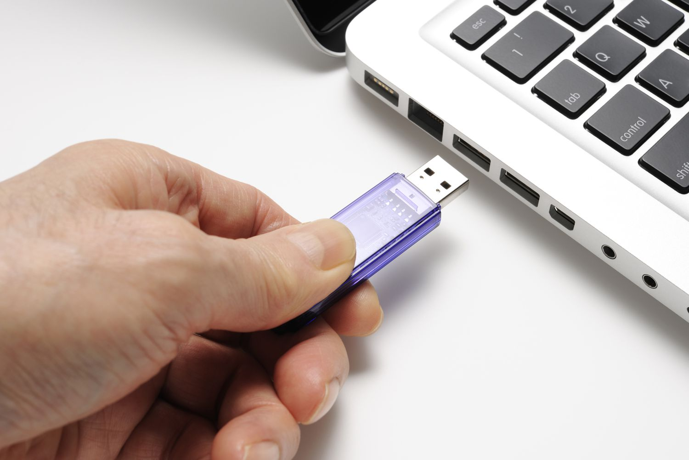
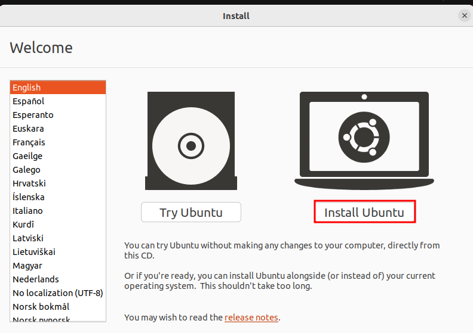
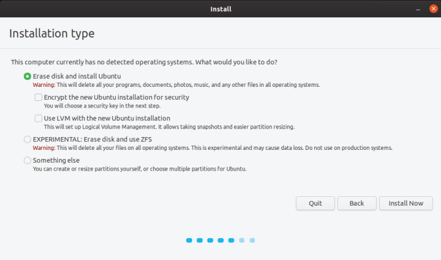
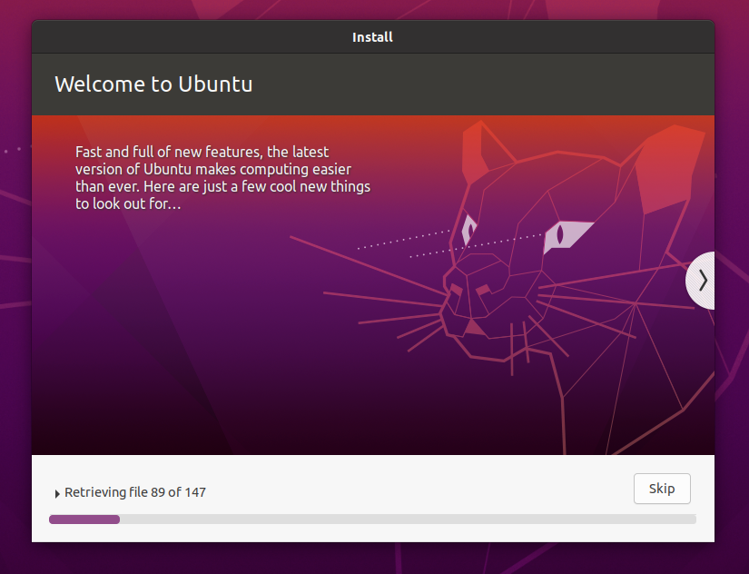

Ubuntu is a popular free and open-source operating system based on the Linux kernel. It is one of the most popular Linux distributions, known for its user-friendly interface, stability, and security. Ubuntu is maintained by Canonical Ltd. and is released in a new version every six months, with long-term support (LTS) versions released every two years. It comes with a wide range of software pre-installed, including web browsers, office productivity tools, multimedia software, and development tools. Ubuntu is used by individuals, businesses, and organizations around the world for desktop, server, and cloud computing purposes.
Here are the steps to install Ubuntu on a computer:
Download the Ubuntu ISO image from the official website. Make sure to select the appropriate version depending on your system architecture and the version of Ubuntu you want to install.
1. Create a bootable USB drive using the downloaded ISO image. You can use a tool like Rufus (on Windows) Etcher (Mac or Linux) to create a bootable USB drive.
2. Insert the bootable USB drive into your computer and restart it.
3. Press the key (F2, F10, F12, or Del) to enter the boot menu and select the USB drive as the boot device.
4. Once the Ubuntu installer starts, select your language and click on the "Install Ubuntu" button.
5.Follow the prompts to select your timezone, keyboard layout, and installation type. You can choose to erase your entire hard drive and install Ubuntu, or you can choose to install Ubuntu alongside your existing operating system.
 7. Set up your user account and password.
8. Wait for the installation process to complete. This may take some time depending on the speed of your computer and the size of your hard drive.
9. Once the installation is complete, restart your computer and remove the USB drive.
10. Ubuntu should now be installed on your computer, and you can start using it.
That's it! You have now successfully installed ubuntu on your computer.